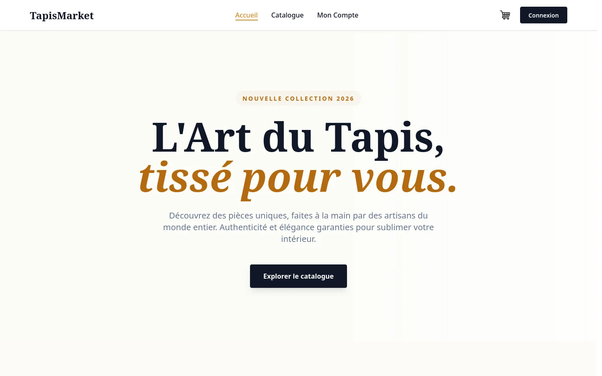
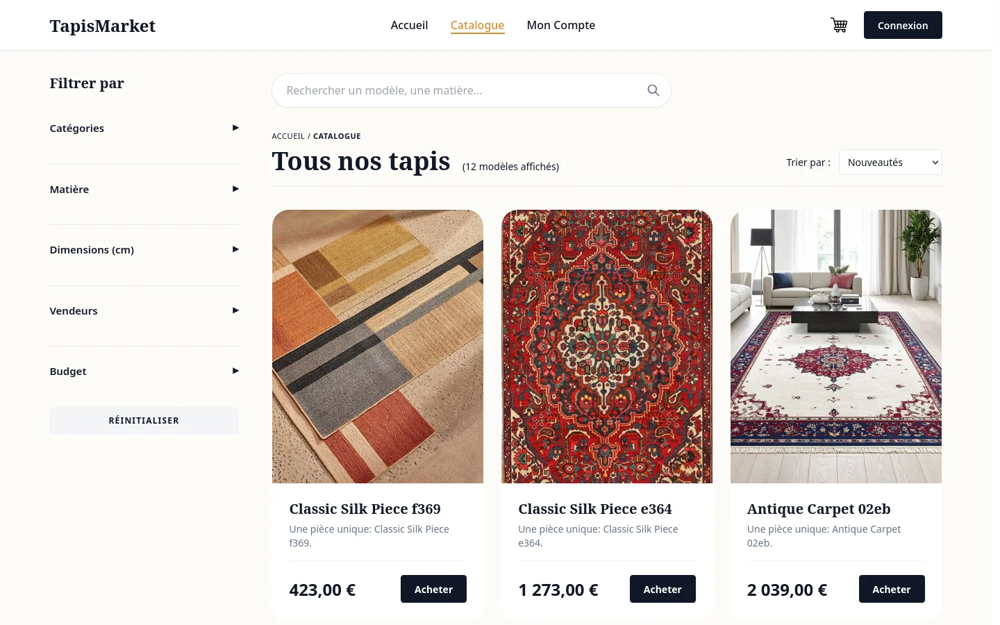
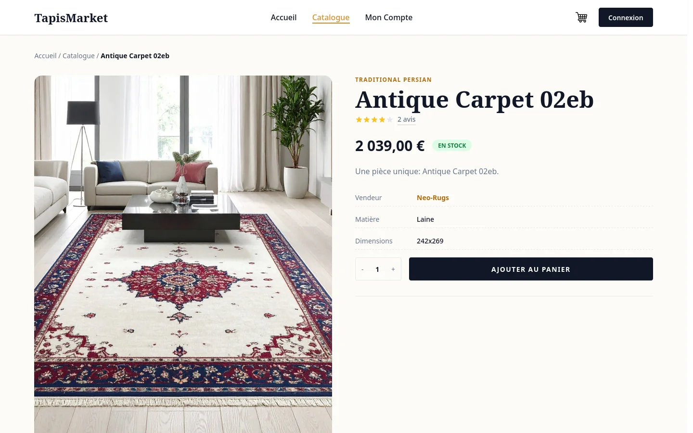
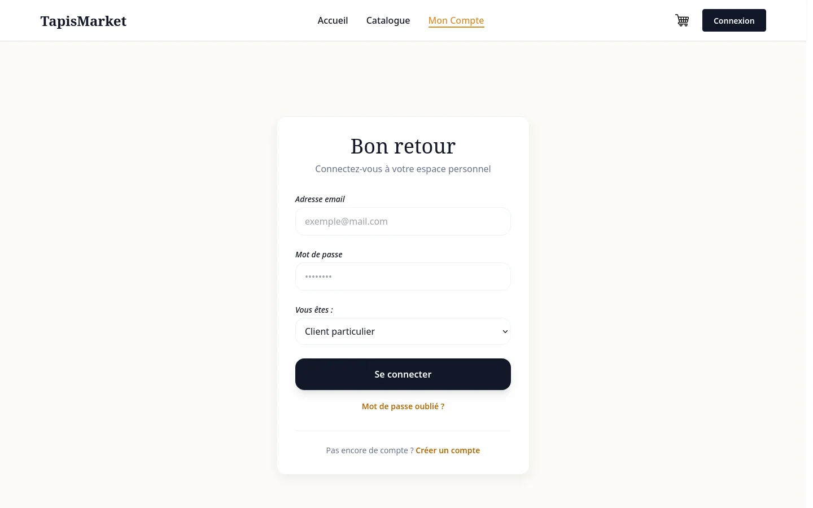
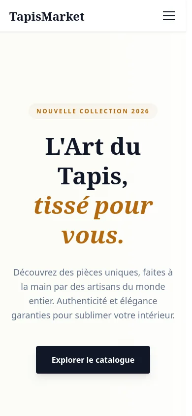

// client
Acheter
- Catalogue avec filtres (catégorie, matière, dimensions, vendeur, budget)
- Fiches produits, panier, commande avec choix de livraison
- Suivi : payée → en préparation → expédiée → livrée
- Adresses et avis notés
Projet universitaire · SAE S3 · 2025–2026
Une marketplace de tapis qui met en relation des vendeurs professionnels et des clients, avec trois espaces distincts : client, vendeur et administrateur. Réalisée à cinq pendant le semestre 3 du BUT ; je me suis occupé du front, du panier et de la commande, et de la mise en production.

TapisMarket est la SAE du semestre 3 du BUT Informatique : concevoir et développer en équipe une application web complète à partir d'un cahier des charges, avec l'analyse UML, la documentation technique et la présentation qui vont avec.
Le sujet : une marketplace où des vendeurs validés publient leurs tapis, où les clients achètent, et où un administrateur modère l'ensemble. Le code vivait sur le GitLab de l'université, chacun sur ses fonctionnalités, avec un environnement de développement commun sous Podman (application, MySQL et PHPMyAdmin).
// client
// vendeur
// administrateur


Sur un projet à cinq, je préfère être précis : voici ma part, telle qu'on la retrouve dans l'historique Git (29 commits sur 218). Le reste — espaces vendeur et admin, avis, frais de port en Template Method, analyse UML — est le travail de mes coéquipiers.
// 01 — front
Premières pages en HTML/CSS (accueil, catalogue, produit, panier, profil, connexion, inscription), puis une refonte complète du design du site en décembre.
// 02 — panier
Panier des clients connectés en base, et panier invité en session, fusionné automatiquement à la connexion. Contrôle du stock à chaque modification.
// 03 — commande
Contrôleur et pages du checkout : adresse, mode de livraison, création de la commande à partir du panier et page de confirmation.
// 04 — production
Dockerfile de production, configuration Apache et base de données à l'exécution, migrations et jeu de données au premier démarrage. Plus la documentation technique et le README.
Un visiteur peut remplir son panier sans compte : il est stocké en
session, sous la forme [produit => quantité].
Quand il se connecte, ce panier est fusionné avec son panier en base : les quantités s'additionnent si le produit y est déjà, et chaque ligne est revérifiée contre le stock avant d'être ajoutée.
private function mergeGuestCart(int $userId)
{
$session = session();
$guestCart = $session->get('guest_cart');
if (!empty($guestCart)) {
$cart = $this->cartModel->getActiveCart($userId);
foreach ($guestCart as $productId => $quantity) {
// Check if item exists in user cart
$existingItem = $this->cartItemModel->where('cart_id', $cart->id)
->where('product_id', $productId)
->first();
$currentQty = $existingItem ? $existingItem->quantity : 0;
$newTotalQty = $currentQty + $quantity;
// Validate merged stock
if ($this->productModel->hasSufficientStock($productId, $newTotalQty)) {
if ($existingItem) {
$this->cartItemModel->updateQuantity($cart->id, $productId, $newTotalQty);
} else {
$this->cartItemModel->addItem($cart->id, $productId, $quantity);
}
}
}
$this->cartModel->updateTotal($cart->id);
$session->remove('guest_cart');
}
}
Railway fournit la base MySQL et le port par variables d'environnement.
Plutôt que de figer la configuration dans l'image, le script d'entrée génère le
.env de CodeIgniter et le port d'Apache
au lancement du conteneur.
Il applique ensuite les migrations et ne lance le jeu de données de démonstration qu'une seule fois, grâce à un fichier témoin.
# Create .env file at runtime with Railway environment variables
cat > /var/www/html/.env <<ENVFILE
CI_ENVIRONMENT = ${CI_ENVIRONMENT:-production}
database.default.hostname = ${MYSQLHOST:-localhost}
database.default.database = ${MYSQLDATABASE:-railway}
database.default.username = ${MYSQLUSER:-root}
database.default.password = ${MYSQLPASSWORD:-}
database.default.DBDriver = MySQLi
database.default.port = ${MYSQLPORT:-3306}
ENVFILE
# Configure port at runtime (Railway provides PORT env var)
PORT=${PORT:-8080}
echo "Listen ${PORT}" > /etc/apache2/ports.conf
# Run migrations automatiquement au démarrage
php /var/www/html/spark migrate --all || true
# Run seeder only once (check if marker file exists)
if [ ! -f /var/www/html/writable/.seeded ]; then
echo "Running DataSeeder for the first time..."
php /var/www/html/spark db:seed DataSeeder || true
touch /var/www/html/writable/.seeded
fi
exec apache2-foregroundUne application CodeIgniter 4 en MVC, découpée par rôle. Des filtres protègent les espaces (connexion, vendeur validé), et la commande est créée dans une transaction : lignes de commande, décrément des stocks, frais de port et vidage du panier réussissent ou échouent ensemble.
AuthFilter (connexion et rôle) · ValidatedSellerFilter (vendeur validé par l'admin)
Client, Seller, Admin + partagés (Auth, Cart, Checkout)
UserRole, ShippingType)
Template Method


01
218 commits à cinq : se répartir les fonctionnalités, gérer les conflits de fusion et s'adapter au code des autres quand ils refactorisent le sien.
02
Obliger à créer un compte avant de remplir son panier fait fuir. Le panier invité ajoute des cas à gérer (fusion, stock, vendeur ou admin qui se connecte), mais il change l'expérience.
03
Passer de Podman en local à Railway m'a appris à sortir la configuration de l'image : port, base de données et URL lus au démarrage, et un conflit de modules Apache à résoudre.